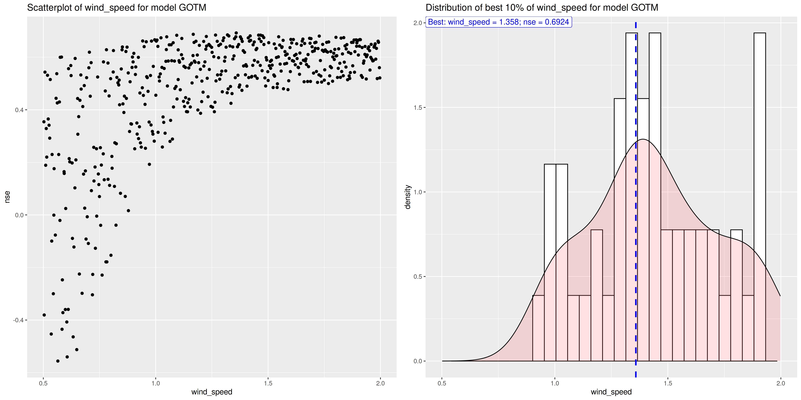
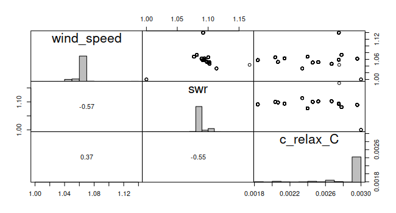

Calibrating LakeEnsemblR
Source:vignettes/articles/calibrating-lakeensemblr.Rmd
calibrating-lakeensemblr.RmdIntroduction
LakeEnsemblR includes some tools for automatic model calibration
which are included in the cali_ensemble() function. The
function profides three methods:
- method “LHC”: Lathin hypercube calibration
- method “MCMC”: Markov Chain Monte Carlo simulation using the
modMCMCfunction from theFMEpackage - method “modFit”: model fitting using one of the algorithms provided
in the
modFitfunction from theFMEpackage
For all three methods model specific parameters and scaling factors for the input meteorological forcing can be calibrated. At the moment calibration is only possible against observed water temperatures
In order for the calibration functions to work you need to supply observed water temperature data to LakeEnsemblR (see Setting up LakeEnsemblR).
Calibration Example
LHC method
Before starting with the calibration you need to have a proper LakeEnsemblR set up (see Running LakeEnsembR). Once you have a running setup you can calibrate your set up following this example.
The calc_fit() function can be used to calculate
performance measures for the single models and the ensemble mean:
# calculate fit for uncalibrated ensemble
calc_fit(ncdf = "output/ensemble_output.nc", model = model)$FLake
rmse nse r bias mae nmae
1 4.450191 0.387401 0.5232364 -1.011676 3.186497 0.272563
$GLM
rmse nse r bias mae nmae
1 3.441311 0.3196817 0.8423969 -2.705337 2.734346 0.2807885
$GOTM
rmse nse r bias mae nmae
1 2.91474 0.5105874 0.898917 -2.392407 2.585137 0.3077198
$Simstrat
rmse nse r bias mae nmae
1 4.632768 -0.2363935 0.5771168 -2.995766 3.467195 0.3189774
$MyLake
rmse nse r bias mae nmae
1 3.021029 0.4742425 0.8951471 -2.411449 2.42786 0.2418637
$ensemble_mean
rmse nse r bias mae nmae
1 3.203972 0.4086384 0.8577426 -2.473107 2.512612 0.2528232
After visual inspection we can load the results from all model runs of the LHC calibration into R and then select the best parameter sets:
# load results of LHC in a data.frame
res_LHC <- load_LHC_results(config_file = config_file, model = model, res_files = unlist(cali_res))
# get the best parameter set for each model using rmse
best_p <- setNames(lapply(model, function(m)res_LHC[[m]][which.min(res_LHC[[m]]$rmse), ]), model)
print(best_p)$FLake
par_id rmse nse r re mae nmae wind_speed swr c_relax_C
262 p0262 2.292835 0.7485358 0.8792717 -0.00355796 1.583352 0.1376543 1.9888 1.1219 0.0070628
$GLM
par_id rmse nse r re mae nmae wind_speed swr mixing.coef_mix_hyp
424 p0424 1.031985 0.93862 0.9866362 -0.09872459 0.8462724 0.1206555 1.8495 1.4935 1.5683
$GOTM
par_id rmse nse r re mae nmae wind_speed swr turb_param.k_min
120 p0120 2.310817 0.6923856 0.9471277 -0.2376698 2.122714 0.260717 1.3583 1.4936 5.2897e-06
$Simstrat
par_id rmse nse r re mae nmae wind_speed swr a_seiche
432 p0432 0.1354335 0.9213483 0.9695128 -0.01320522 0.09781472 0.02458256 1.783 0.52444 0.0027548
$MyLake
par_id rmse nse r re mae nmae wind_speed swr Phys.par.C_shelter
57 p0057 1.413915 0.8848345 0.9856599 -0.1432439 1.273591 0.148946 1.6999 1.3956 0.15886No we just need to change the parameter in the LakeEnsemblR config file and we are done.
MCMC method
The “MCMC” method utalizes the modMCMC() function from
the FME package, using an adaptive Metropolis algorithm.
Same as with the LHC method, the outcome of every model call during the
MCMC simulation is written to a model specific file in the
out_f folder, which defaults to “cali”. Additional
arguments can be supplied to modMCMC() using the ellipsis
argument (...).
The function returns a list with an entry for every model, containing
the return value of modMCMC() for every model run.
# calibration using the MCMC method
cali_res <- cali_ensemble(config_file = config_file, num = 10000, cmethod = "MCMC",
parallel = TRUE, model = model)
# get best parameters
best_par <- setNames(lapply(model, function(m)cali_res[[m]]$bestpar), model)
print(best_p)$FLake
wind_speed swr c_relax_C
2.20620031 0.83398344 0.00280977
$GLM
wind_speed swr mixing/coef_mix_hyp
1.176341 1.035262 1.231466
$GOTM
wind_speed swr turb_param/k_min
3.958514e-01 2.626488e+00 8.011710e-06
$Simstrat
wind_speed swr a_seiche
1.284806245 0.806533004 0.001099792
$MyLake
wind_speed swr Phys.par/C_shelter
1.0348407 1.8714667 0.2299155 Note that you can also use the functions provided by
FME, e.g. plot(), summary(), or
pairs()
# plot MCMC result for e.g. FLake
pairs(cali_res$FLake)
modFit method
The “modFit” method utalizes the modFit() function from
the FME package, fitting a model to data. There are several
different optimization algorithms available (see
?FME::modFit) Additional arguments can be supplied to
modFit() using the ellipsis argument
(...).
The function returns a list with an entry for every model, containing
the return value of modFit() for every model run.
# calibration using the modFit method
cali_res <- cali_ensemble(config_file = config_file, cmethod = "modFit",
parallel = TRUE, model = model, method = "Nelder-Mead")
# get optimal parameters for model FLake
print(cali_res$FLake$par) wind_speed swr c_relax_C
0.895554262 1.121689727 0.003282534 You can also use all available functions for FME objects like
e.g. summary()
summary(cali_res$FLake)Parameters:
Estimate Std. Error t value Pr(>|t|)
wind_speed 0.8955543 0.4065261 2.203 0.0277 *
swr 1.1216897 0.0053418 209.985 <2e-16 ***
c_relax_C 0.0032825 0.0002157 15.219 <2e-16 ***
---
Signif. codes: 0 ‘***’ 0.001 ‘**’ 0.01 ‘*’ 0.05 ‘.’ 0.1 ‘ ’ 1
Residual standard error: 3.014 on 2503 degrees of freedom
Parameter correlation:
wind_speed swr c_relax_C
wind_speed 1.000000 0.01164 0.001061
swr 0.011642 1.00000 -0.045292
c_relax_C 0.001061 -0.04529 1.000000